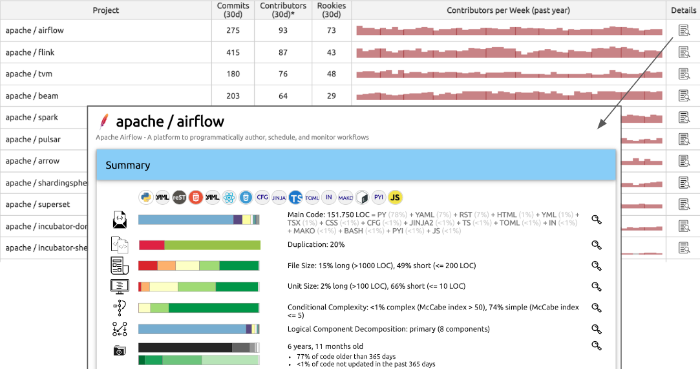

Software Tools: Examples and Screenshots
IN THIS SECTION, YOU WILL: See a few screenshots of concrete tools I built as a part of Lightweight Architectural Analytics websites.
Dashboards
Here are the screenshots from Lightweight Architectural Analytics websites I built in AVIV Group (Figure 1) and eBay Classifieds (Figure 2):

Figure 1: A screenshot of the start page of the architecture data dashboard we’ve built and used at AVIV Group.

Figure 2: A screenshot of the start page of the architecture data dashboard we’ve built and used at eBay Classifieds.
`
Examples of Insights From Source Code Analyses
The source code and its commit history are like a treasure chest for creating data-driven architecture documentation—packed with nuggets of wisdom about technology, team activities, dependencies, and software quality. To help dig up this treasure without getting your hands too dirty, I’ve developed and actively maintain a project called Sokrates.
Sokrates is designed with an architect’s x-ray vision, allowing you to zoom in and out of source code landscapes. It provides a high-level overview of the IT landscape, summarizing data from various teams and groups, while also letting you dive deep into the code-level details. This dual functionality makes it the perfect sidekick for both CTO-level strategy powwows and developer-level code critiques.
Figures 3 to 7 show some insights from source code analyses with Sokrates.

Figure 3: Sokrates can instantly create a helicopter view of the technology landscape, programming languages, active contributors, and commit trends.

Figure 4: Sokrates can show detailed code and contributors’ trends per repository, enabling zooming in each repository up to the code level.

Figure 5: Sokrates can create a tech radar by tagging projects with identified technologies.
Figure 6: Sokrates can show contributor trends, distribution of “veterans” and “rookies,” and dependencies between people and repositories, enabling zooming in into patterns of the contribution of individual contributors.
Figure 7: Sokrates can reveal the team topologies by plotting 2D and 3D graphs of dependencies that people create through working on the same repositories in the same period.
Figure 8: Example Architecture Practice keyt performance indicators (KPIs) dashboard (generated from a JSON configuration file).
Appendix 6: Software Tools |
|||
| ← | → | ||